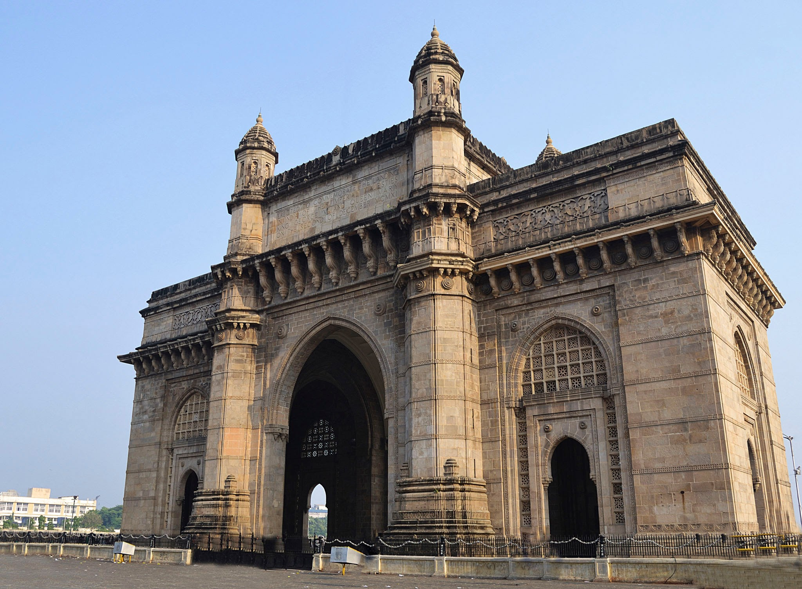
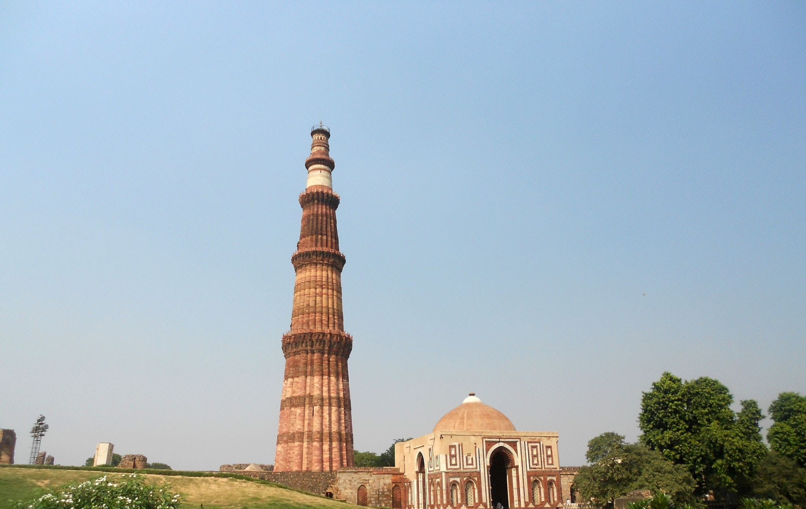
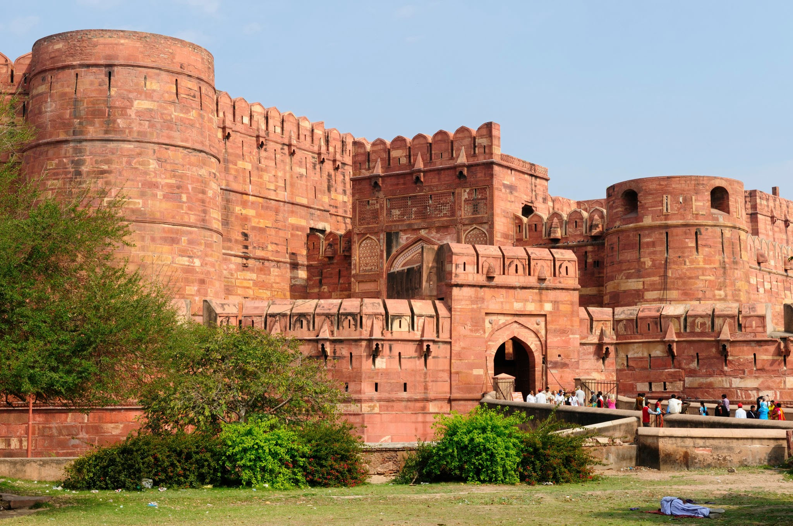
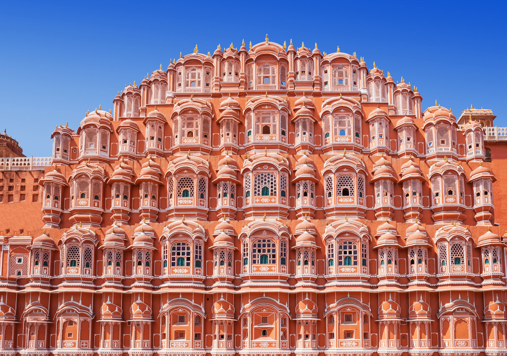
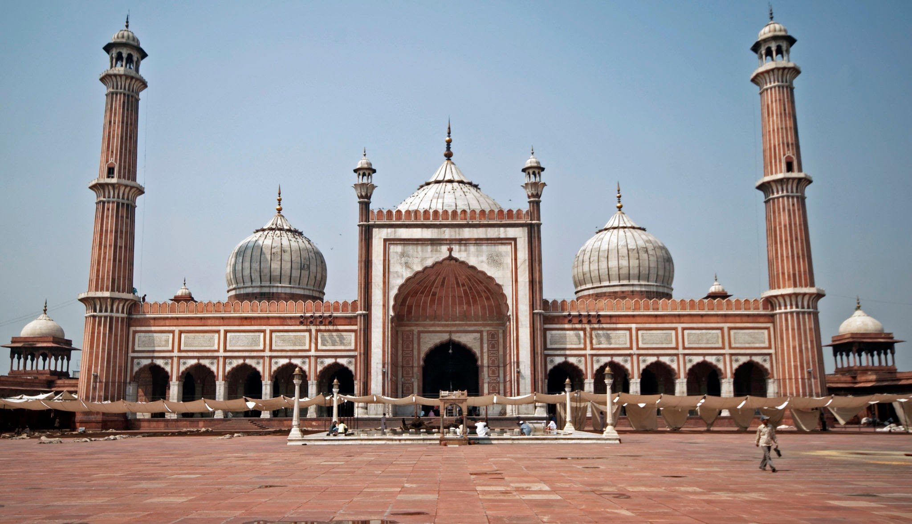
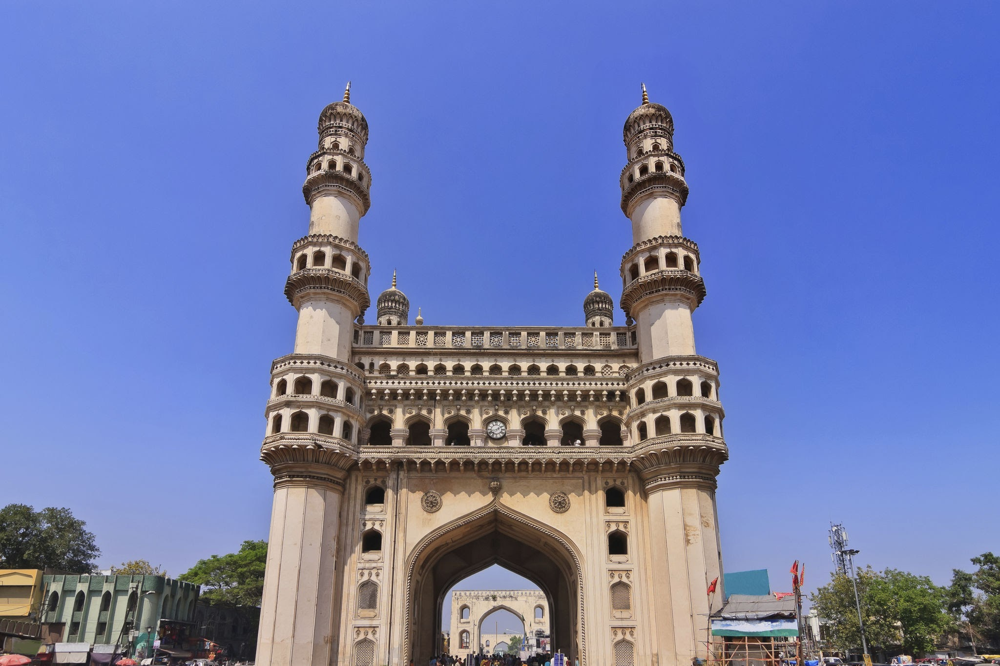

The Taj Mahal is an ivory-white marble mausoleum on the right bank of the river Yamuna in Agra,Uttar Pradesh, India. It was commissioned in 1631 by the fifth Mughal emperor,Shah Jahan to house the tomb of his beloved wife, Mumtaz Mahal; it also houses the tomb of Shah Jahan himself.

The Gateway of India is an arch-monument completed in 1924 on the waterfront of Mumbai, India. It was erected to commemorate the landing of George V for his coronation as the Emperor of India in December 1911 at Strand Road near Wellington Fountain. He was the first British monarch to visit India
The Qutb Minar, also spelled Qutub Minar and Qutab Minar, is a minaret and "victory tower" that forms part of the Qutb complex, which lies at the site of Delhi’s oldest fortified city, Lal Kot, founded by the Tomar Rajputs. It is a UNESCO World Heritage Site in the Mehrauli area of South Delhi, India.
The Agra Fort is a historical fort in the city of Agra, and also known as Agra's Red Fort. Mughal emperor Humayun was crowned at this fort. It was later renovated by the Mughal emperor Akbar from 1565 and the present-day structure was completed in 1573.
The Red Fort or Lal Qila is a historic fort in the Old Delhi neighbourhood of Delhi, India, that historically served as the main residence of the Mughal emperors. Emperor Shah Jahan commissioned construction of the Red Fort on 12 May 1638,when he decided to shift his capital from Agra to Delhi

The Hawa Mahal is a palace in the city of Jaipur, India. Built from red and pink sandstone, it is on the edge of the City Palace, Jaipur, and extends to the Zenana, or women's chambers.
The India Gate is a war memorial located near the Kartavya path on the eastern edge of the "ceremonial axis" of New Delhi, formerly called Rajpath.

Masjid-i-Jehan-Numa, commonly known as the Jama Masjid of Delhi, is one of the largest mosques in India. It was built by the Mughal emperor Shah Jahan between 1644 and 1656, and inaugurated by its first Imam, Syed Abdul Ghafoor Shah Bukhari.
The Lotus Temple, located in New Delhi, India, is a Baháʼí House of Worship that was dedicated in December 1986. Notable for its lotus-like shape, it has become a prominent attraction in the city. Like all Bahá’í Houses of Worship, the Lotus Temple is open to all, regardless of religion or any other qualification.

The Charminar is a monument located in Hyderabad, Telangana, India. Constructed in 1591, the landmark is a symbol of Hyderabad and officially incorporated in the emblem of Telangana. The Charminar's long history includes the existence of a mosque on its top floor for more than 425 years.
